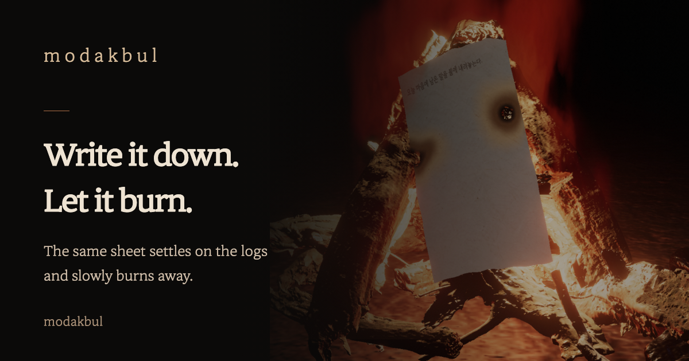

m o d a k b u l

A quiet campfire for one. Write down what has been weighing on you. The same sheet settles over the logs, bends around the wood, and slowly burns away.
Just watch the fire
Fire view clears the words and controls so you can sit with the campfire. You can watch in landscape or on a tablet, too.
Keep a good moment close
Save a memory as a polaroid, add a photo or drawing, and hang up to three favorites by the fire.
Share only when you choose
Share an app link with a preview card or make a photo of your own campfire. A kept memory can be shared as a card only when you choose to send it.
No accounts or ads. Burned writing is not kept; memories you save stay on this device. A link or image goes to another app only when you choose to share it. The main features work offline, and the app quietly lets you know when an update is available.
Support: gtpgg1013@gmail.com